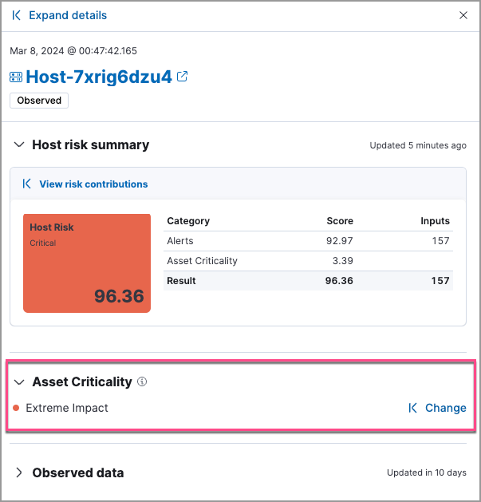

Asset criticality
editAsset criticalityedit
The asset criticality feature allows you to classify your organization’s entities based on various operational factors that are important to your organization. Through this classification, you can improve your threat detection capabilities by focusing your alert triage, threat-hunting, and investigation activities on high-impact entities.
You can assign one of the following asset criticality levels to your entities, based on their impact:
- Low impact
- Medium impact
- High impact
- Extreme impact
For example, you can assign Extreme impact to business-critical entities, or Low impact to entities that pose minimal risk to your security posture.
View and assign asset criticalityedit
Entities do not have a default asset criticality level. You can either assign asset criticality to your entities individually, or bulk assign it to multiple entities by importing a text file.
When you assign, change, or unassign an individual entity’s asset criticality level, that entity’s risk score is immediately recalculated.
If you assign asset criticality using the file import feature, risk scores are not immediately recalculated. The newly assigned or updated asset criticality levels will impact entity risk scores during the next hourly risk scoring calculation.
You can view, assign, change, or unassign asset criticality from the following places in the Elastic Security app:
-
The host details page and user details page:

-
The host details flyout and user details flyout:
 -
The host details flyout and user details flyout in Timeline:

Bulk assign asset criticalityedit
You can bulk assign asset criticality to multiple entities by importing a CSV, TXT or TSV file from your asset management tools.
The file must contain three columns, with each entity record listed on a separate row:
-
The first column should indicate whether the entity is a
hostor auser. -
The second column should specify the entity’s
host.nameoruser.name. -
The third column should specify one of the following asset criticality levels:
-
extreme_impact -
high_impact -
medium_impact -
low_impact
-
The maximum file size is 1 MB.
File structure example:
user,user-001,low_impact user,user-002,medium_impact host,host-001,extreme_impact
To import a file:
- Go to Manage → Asset criticality.
-
Select or drag and drop the file you want to import.
The file validation step highlights any lines that don’t follow the required file structure. The asset criticality levels for those entities won’t be assigned. We recommend that you fix any invalid lines and re-upload the file.
- Click Assign.
This process overwrites any previously assigned asset criticality levels for the entities included in the imported file. The newly assigned or updated asset criticality levels are immediately visible within all asset criticality workflows and will impact entity risk scores during the next risk scoring calculation.
Improve your security operationsedit
With asset criticality, you can improve your security operations by:
Prioritize open alertsedit
You can use asset criticality as a prioritization factor when triaging alerts and conducting investigations and response activities.
Once you assign a criticality level to an entity, all subsequent alerts related to that entity are enriched with its criticality level. This additional context allows you to prioritize alerts associated with business-critical entities.
Monitor an entity’s riskedit
The risk scoring engine dynamically factors in an entity’s asset criticality, along with Open and Acknowledged detection alerts to calculate the entity’s overall risk score. This dynamic risk scoring allows you to monitor changes in the risk profiles of your most sensitive entities, and quickly escalate high-risk threats.
To view the impact of asset criticality on an entity’s risk score, follow these steps:
- Open the host details flyout or user details flyout. The risk summary section shows asset criticality’s contribution to the overall risk score.
- Click View risk contributions to open the flyout’s left panel.
- In the Risk contributions section, verify the entity’s criticality level from the time the alert was generated.